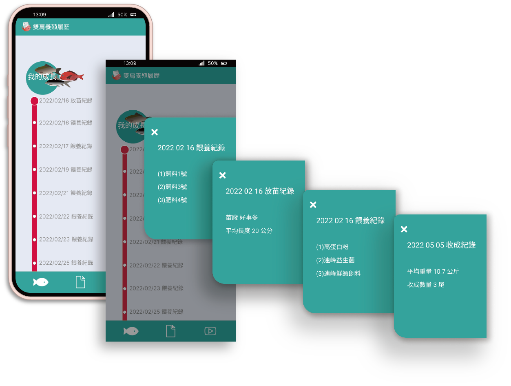

產銷數位履歷的目的是為了讓消費者追溯生鮮的來源，同時是農漁民於自家產品品質的成績單。
雙肩與農委會合作，將所開發行雲好水數位養殖系統推給養殖業者，讓小農根據養殖過程來紀錄飼料品項、施肥種類、施藥類型等，建立一個農業雲端平台。
而數位履歷串接以上系統，消費者購買生鮮能透過掃QR cod閱讀此魚蝦的成長過程、養殖業者基本資料、檢驗證明和料理等資訊。將「買得放心 食的安心」宗旨
與在地小農一起建立起一個養殖鏈品牌。
團隊夥伴
我們擁有一位出色的產品經理、一位才華洋溢的UI UX設計師、一位幽默風趣的APP工程師和一位邏輯縝密的後端工程師。
身為UI UX我負責使用者訪談研究、使用流程設計、介面設計、操作測試回饋。

目前雙肩的數位履歷為雙肩私人機構認證，不算具有公信力的平台，雙肩目標致力於將系統更全面，讓養殖物種生長條件與數據更加多元，並更效率與完善的管理養殖作業，
建立一套農業雲，未來當資料更加完整，能與政府平台做數據串接，讓我們的檢驗與認證具有公信力。
目前政府有一套履歷平台，小農必須先申請與註冊拿到認證帳號外，養殖場、養殖物也有嚴格的規範和定時檢驗，訪談中，大多的農民對於此平台的操作反應過於複雜、不夠直覺、常在使用中迷失方向，且呈現於消費者資訊不夠完整。
由於流程過於繁瑣、系統資訊回饋不夠明確，讓有年紀的使用者相當挫折，他們需要聘請「專員」為他們輸入數據增加了人力、時間成本。

內容簡單
01.買菜不會有耐心與時間閱讀過多訊息
02.所有資訊重點化、圖示化並簡化
03.要有特別的誘因吸引消費者掃QRcode
功能與流程簡潔
01.任何頁面資訊都要5秒內閱讀完畢
02.流程操作不超過3層指令
03.介面能簡單的點選進入不同環節
畫面美觀
01.色彩柔和不刺眼
02.文字間距適當易閱讀
03.盡量圖取代文字
串接雙肩所開發的行雲好水智慧養殖系統，將養殖者日常如放苗狀況、餵養的飼料、肥料、益生菌與收成情形等資訊讓使用者可閱讀。

放苗紀錄
01.放苗日期
02.苗場名稱
03.魚蝦苗的平均大小
日常餵養紀錄
01.飼料品項
02.肥料品項
03.藥品品項
04.消費者於第三方平台確認餵養物
經過整個產銷履歷開發過程，未來我們可將此技術運用得更多元，例如近年崛起的寵物商機，現在毛爸、毛媽也相當注重毛孩的飲食狀況，而知名的寵物品牌如好味小姐、毛孩時代等都很受年輕人歡迎，利用影音串流平台發家也成了創業很棒的管道，
因此產銷履歷必須轉型，讓更多觀眾願意與全家大小分享，使原本冰冷的資訊更年輕、活潑化!
雙肩的產銷履歷仍屬私人單位，並不具公信力，然而養殖者反映政府與漾丰所開發之產銷平台不夠人性，使用上耗費多餘的人力成本、時間成本，且品質管控過程看似嚴謹實則漏洞百出，消費者拿在手中的食材真的能安心嗎?當然!
雙肩的產銷履歷也無法百分百的保證產品品質，若要將整個產銷過程落實，需從苗場檢驗、飼料品項、藥品品項、廠商資料資訊雲端化且資源共享與串聯，重點是每層都需要嚴格的品管，並隨時更新檢驗資訊，這要花費大量的人力、物力，可以說目前就算政府也無法做到，
過多的灰色地帶、老舊政策套令等都是難以撼動的窠臼，雙肩目的就是落實養殖管理，將過程資訊化並上傳成農業雲，盡量減少中間控管不利的缺失!將農業智慧化、標準化，減少人為疏失使食安更徹底 !